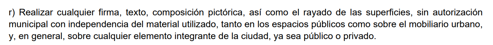
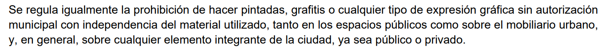

Limpiezas
Área Delegada Limpieza y Zonas Verdes @Mtnezparamo
Titular del Área Delegada: José Antonio Martínez Páramo
Pertenece a Área de Gobierno de Urbanismo, Medio Ambiente y Movilidad
Ordenanza de Limpieza de los Espacios Públicos, Gestión de Residuos 27 feb 2009
Ordenanza de Limpieza de los Espacios Públicos, Gestión de Residuos y Economía Circular 2022
Ordenanza de Limpieza de los Espacios Públicos, Gestión de Residuos y Economía Circular 12/2022, de 20 de diciembre
En la #Ordenanza 12/2022, de 20 de diciembre, de Limpieza de los #EspaciosPúblicos, Gestión de Residuos y Economía Circular, queda prohibido:
Realizar cualquier firma, texto, composición pictórica, así como el rayado de las superficies
El artículo 9 de la Ordenanza 12/2022, de 20 de diciembre, de Limpieza de los Espacios Públicos
Gestión de Residuos y Economía Circular de Madrid prohibe:

Además, en el apartado IV de su preámbulo se dice:

La Policía Municipal poniendo multas por repartir folletos manifestacion de la Sanidad
Prohibición: Página 6, Artículo 2. Punto 1 c)
c) Reparto o entrega en vía pública de folletos, anuncios, pegatinas o cualquier otra clase de producto publicitario.
Actividades no sujetas a esta ordenanza: Página 5, Artículo 1. Punto 3.
3. No están sujetos a esta Ordenanza las actividades que carezcan de naturaleza publicitaria de conformidad con lo dispuesto
en el artículo 2 de la ley 34/1988, de 11 de noviembre, General de Publicidad, cuando se efectúen en vía pública por entidades sin ánimo de lucro,
partidos políticos y otras entidades vecinales y asociativas para informar, difundir y promocionar sus actos propios de carácter social, político, cultural,
de participación ciudadana, de fomento de valores cívicos y conductas humanitarias, de concienciación y sensibilización social y similares.
Ordenanza Reguladora Publicidad Exterior, 30 enero 2009 Versión: 08/04/2011
Ayto. eleva las multas por residuos de botellón y grafitis en la nueva ordenanza
Denuncias y sanciones sobre limpieza urbana y zonas verdes
Funcionamiento App Madrid móvil
Vas a tramites
Limpieza de pintadas de fachadas
Avisos en linea
Luego aparece el mapa de la ciudad y un círculo azul en la esquina derecha inferior de la pantalla
Marcas la opción de tengo un problema con un elemento de la calle
y ya rellenas los huecos con la información y envias la foto pertinente
Aprobada la nueva ordenanza de Limpieza de la capital que endurece las sanciones contra grafitis, el botellón y el abandono de cartones, regula un horario para deshacerse de los residuos de vidrio
Recogida de cartón puerta a puerta en zonas de alta densidad comercial
Recogida de residuos domiciliarios en zonas con cubos de dos ruedas
Recogida de PLÁSTICOS, METALES Y BRIKS (cubos de tapa amarilla): TODOS LOS DÍAS, incluso domingos y festivos
Recogida de ORGÁNICA (cubos de tapa marrón): TODOS LOS DÍAS, incluso domingos y festivos
Recogida de RESTO (cubos de tapa naranja): de lunes a sábado, excepto festivos.
El contenedor naranja no se recogerá la mayoría de días en Madrid y casi todos sus ciudadanos lo desconocen
zonas interbloques
Limpieza y conservación de las zonas interbloques de Madrid | Contrato 13/09/2022
Madrid autoriza por 52 millones € nuevo contrato de limpieza zonas interbloques
Ayto aprueba Plan espacios interbloque, clarifica titularidad permite mantenimiento y rehabilitación
Ayuntamiento mejora el plan para espacios interbloques de 45 barrios residenciales en 13 distritos
Piden al Ayto. de Madrid que limpie los espacios 'interbloque' en una decena de barrios
Estas son las 325 zonas interbloques que estrenan servicio de limpieza diaria
LISTADO limpieza 294 zonas espacios interbloque - FRAVM
Ayto. aprueba el Plan para los espacios interbloque
Resolución del TACP recurso especial número 409/2022 espacios interbloques
Zonas interbloques de 13 distritos de Madrid contarán con espacios rehabilitados, jardines con nuevos árboles y una gestión sostenible del agua de riego
Trece zonas interbloques de la ciudad contarán con espacios rehabilitados jardines con nuevos árboles y una gestión sostenible del agua de riego
Madrid reinicia la limpieza de los espacios interbloque
incluye por primera vez las 325 zonas interbloques de Madrid, cuenta con un gasto plurianual de 51,96 millones de euros para cuatro años
y ha sido adjudicado a la UTE Grupo Eulen con Obras y Servicios Taga S.A. Incluye todas las zonas de esta tipología existentes en Madrid, ubicadas en 14 distritos.
Moratalaz mejora el ajardinamiento de sus espacios interbloques
El personal que presta el servicio asciende a 368 personas, suponiendo un incremento de 150 trabajadores sobre el personal mínimo establecido en el pliego del contrato que exigía 218 operarios.
De estos 150 efectivos, 130 son a tiempo completo y 20 cuando se den alertas por nieve o hielo.
El servicio cuenta, en exclusiva, con 79 vehículos y diversa maquinaria auxiliar como carritos y soplantes eléctricos que hacen más eficaz y sostenible la limpieza de estas zonas.
El nuevo contrato engloba los trabajos necesarios para conseguir la limpieza y salubridad de las zonas interbloques, la recogida de todos los residuos abandonados en el espacio público,
incluidos los no depositados dentro de los contenedores, el vaciado de papeleras y la limpieza de manchas.
También realiza la conservación de las zonas verdes como la siega, poda y conservación del arbolado y resto de especies vegetales, cualquiera que sea su ubicación
(alcorques, terrizos, jardineras, arriates y similares), así como los tratamientos contra plagas, fitosanitarios, conservación de sistemas de riego y todos los trabajos accesorios necesarios
para la correcta conservación de zonas verdes, además de la retirada de hierbas y matorrales de crecimiento espontáneo en pavimentos.
También da cobertura a limpiezas extraordinarias ante situaciones que requieran de un tratamiento específico: caída masiva de la hoja en diversos períodos anuales, eliminación
y limpieza de placas de hielo, de acumulaciones de nieve, de eventos tanto puntuales como periódicos cuya limpieza no sea competencia del Servicio Urgente de Limpieza (Selur),
así como el resto de actividades necesarias para garantizar la limpieza de las zonas.
Con la entrada en vigor de este contrato y de otros como el de contenerización y recogida de residuos, los contratos de limpieza viaria y mantenimiento de zonas verdes y el del SELUR,
el Ayuntamiento de Madrid ha incrementado el gasto en un 32,72 % durante este mandado, pasando de los
596,6 millones de euros a 791,8 millones de euros.
FRAVM @DefensorPuebloE abandono de las zonas interbloque de la capital
Mapa de Madrid que te dice cuántos barrenderos han de limpiar tu calle cada semana
Con erre de… Reducir, Reutilizar, Reciclar, Reparar, Renovar, Recuperar, Rediseñar, Respetar
Sitios de interés
Madrid 360 * Plan de ayudas Cambia 360
Calidad del aire. Datos en tiempo real - Portal de datos abiertos del Ayuntamiento de Madrid
Avisos: Incidencias y peticiones de recogida de enseres y muebles
Avisos: Incidencias y peticiones sobre averías, desperfectos, riego, poda y limpieza en zonas verdes municipales y arbolado viario
Avisos: Incidencias y peticiones de los servicios de limpieza urbana, residuos y zonas verdes
Recogida de muebles programada - Ayuntamiento de Madrid tercer miércoles mes
Servicio de recogida programada de muebles, electrodomésticos y enseres. Zonas y calendario anual. - Geoportal del Ayuntamiento de Madrid
Punto Limpio Móvil del Ayuntamiento de Madrid Distrito de Usera
Puntos Limpios de Proximidad
Puntos Limpios Usera Google Maps
La recogida de los contenedores amarillo (envases) y azul (papel-cartón) en Madrid será diaria
Madrid tendrá un único modelo de contenedor para las distintas fracciones de residuos
El vaciado de contenedores de envases y papel será diario desde noviembre
Arranca la renovación de los 30.000 contenedores de Madrid y el soterramiento dará comienzo en Centro
ContenedoresCONTENUR se adjudica el mayor contrato de contenerización hasta la fecha en Europa
El Ayuntamiento renueva la recogida de residuos reciclables con contenedores soterrados, accesibles y respetuosos con el medioambiente
Servicio de Limpieza Urgente (SELUR)
|
Servicio de limpieza de los espacios públicos de Madrid (lote 6 Usera)
Servicio de limpieza de los espacios públicos de Madrid | Expediente: 300/2020/00547
POBLACION MADRID CAPITAL Fecha: 2020 Dato: 3.334.730 Hab ine.es
POBLACION MADRID CAPITAL Fecha: 1 enero 2021 Dato: 3.312.310 Hab Por Distritos
1.636.419.788,82 Presupuesto Limpiezas 2021 (6 años) contratos
1.636.419.788,82 Presupuesto Limpiezas 2021 (6 años) 5 empresas
1.636.419.788,82 Presupuesto Limpiezas 2021 (6 años) 6 empresas
entre hab. 3.334.730= 490,720€ entre 6 años=81,786€/año
PLIEGO DE PRESCRIPCIONES TÉCNICAS DEL CONTRATO INTEGRAL DE GESTIÓN DEL SERVICIO PÚBLICO DE LIMPIEZA Y CONSERVACIÓN DE LOS
ESPACIOS PÚBLICOS Y ZONAS VERDES
Lote 1: Centro, Chamberí, Tetuán y el Barrio de Argüelles (Moncloa - Aravaca)
El bulevar de la Castellana se distribuye entre los lotes 1 y 2
Lote 2: Barrio Arganzuela, Retiro, Salamanca y Chamartín: 564.516hab
gastan 274 millones (6 años) 80.89€ hab./año
Lote 6: Usera, Villaverde, y Carabanchel 555.895hab
252.8 millones (6 años) 75.79€ hab./año casi 6€ menos para el sur
Madrid tendrá dos contratos más de limpieza para hacer un total de siete julio 2022
Servicio de limpieza de los espacios públicos de Madrid | Expediente: 300/2020/00547
Expediente 132/2013/01244 | Gestión integral de infraestructuras viarias
Expediente 132/2013/01244 | PPTP PRESCRIPCIONES TÉCNICAS PARTICULARES
Almeida rompe con los contratos de limpieza de Botella
Ayto. Madrid alarga un mes y medio más los contratos de limpieza de Ana Botella
Ayto. Madrid cinco grandes empresas contratos limpieza 1.636 millones hasta 2027
Junta gobierno 28 noviembre 2021.:
5.- Autorizar el contrato de servicios de limpieza y reposición de contenedores higiénico-sanitarios
de los equipamientos adscritos al distrito, mediante tramitación anticipada del expediente
y el gasto plurianual correspondiente de 6.154.693,46 euros. Distrito de Usera
Ayto renueva la recogida de residuos reciclables con contenedores soterrados, accesibles y respetuosos con el medioambiente
Madrid: la plaga de los armarios eléctricos
Basuras | gestión de residuos
El plan contra la basura acumulada en Usera: más contenedores e inspecciones 'a pie de cubo'
Para 2025 quieren poner una nueva tasa de basuras a partir de abril
Lo que pagarás de tasa de basuras en 2025 según el barrio de Madrid en el que vivas: de 47 euros en Villaverde a 574 en Aravaca
76€ Barrio de San Fermín
|
Grafitis
Área Delegada Limpieza y Zonas Verdes @Mtnezparamo
Aprobada la nueva ordenanza de Limpieza de la capital que endurece las sanciones contra grafitis
Avisos: Solicitud de limpieza de pintadas en fachadas
Solicitud de limpieza de pintadas en fachadas
Servicio de limpieza o eliminación de pintadas – Calendario de Limpieza por sectores - Geoportal del Ayuntamiento de Madrid
SEPROPUR la nueva sección de la Policía Municipal para luchar contra los grafitis
Madrid contará desde junio, y durante los próximos ocho años, con ‘patrullas antigrafitis’
Nueva Sección de Policía Municipal centrada en la lucha contra las pintadas vandálicas que ensucian la ciudad, unas patrullas antigrafiti que se llamarán
Sección de Protección del Patrimonio Urbano. Dotado inicialmente con alrededor de 40 efectivos, el proyecto de esta sección policial se pondrá en marcha esta semana y su función será
la de perseguir la realización de pintadas y aplicar las sanciones correspondientes en estrecha colaboración con el Área de Urbanismo, Medio Ambiente y Movilidad y el refuerzo del servicio de limpieza municipal para eliminar estos grafitis.
Los agentes antigrafiti empiezan a patrullar las calles de Madrid el próximo 30 de octubre
40 efectivos Policía Municipal patearán el Centro y los distritos del sur de la ciudad las 24 horas.
Castigan como delito los grafitis en bienes no protegidos | Audiencia Burgos
Urbaser contrato de 178 millones para limpieza urgente y eliminar grafitis ofensivos (SELUR)
El nuevo contrato del SELUR crea patrullas específicas para la eliminación de grafitis
Urbaser contrato de 178 millones para limpieza urgente y eliminar grafitis ofensivos (SELUR)
Concesión servicios para la limpieza urgente-SELUR | Expediente: 131/2021/17024
Servicio de Limpieza Urgente (SELUR)
Nuevo contrato del SELUR crea patrullas específicas para la eliminación de grafitis
Detenido un grupo de grafiteros por daños en más de 2.000 trenes de Europa
Madrid tendrá 'patrullas antigrafitis' para limpiar las pintadas vandálicas en la capital por 6M€
Madrid abre a consulta pública la nueva ordenanza de limpieza y residuos
se endurecerá el régimen sancionador para eliminar las prácticas incívicas, como pintadas vandálicas
Almeida triplica las sanciones por grafitis, botellón y dejar cartón tirado con multas de hasta 6.000 euros apartir octubre
Ayto. eleva las multas por residuos de botellón y grafitis en la nueva ordenanza
Aprobada la nueva ordenanza de Limpieza que endurece las sanciones contra grafitis, el botellón y el abandono de cartones,
regula un horario para deshacerse de los residuos de vidrio
Avisos Solicitud de limpieza de pintadas (grafitis) en fachadas Ayto. Madrid
«Patrullas» antigrafitis e incorpora 800 carritos y 60 bicimotos a su servicio de limpieza
Frecuencias SELURAdemás de las actuaciones por avisos, el Área de Medio Ambiente y Movilidad ha establecido las frecuencias de eliminación de pintadas para el nuevo SELUR.
En los seis barrios de Centro, el distrito con mayor proliferación de pintadas, se revisarán las zonas sensibles para su limpieza una vez cada 25 días.
Para aquellas zonas donde los grafitis son habituales pese a su retirada, se ha estipulado una periodicidad de una vez cada 45 días.
Se trata de once barrios situados en cuatro distritos: Valverde (Fuencarral-El Pardo); Aluche, Las Águilas, Lucero, Puerta del Ángel (Latina);
Buenavista, Opañel, San Isidro y Vista Alegre (Carabanchel); Numancia y San Diego (Puente de Vallecas).
En el resto de los 114 barrios de la ciudad, la frecuencia de intervención será cada 60 días.
@Lineamadrid solicito limpieza de pintadas vandalicas en el muro de Madrid Río junto al antiguo mercado de frutas de Legazpi,han vandálizado el muro con pintadas con spray
Almeida contempla dar ayudas a las comunidades de vecinos por la limpieza de grafitis
Considera que los grafitis en inmuebles "no tienen una respuesta penal adecuada
|
La Ley 3/2013, de 18 de junio, de Patrimonio Histórico de la Comunidad de Madrid donde se recoge la figura del BIC viene a decir lo mismo:
Artículo 12. Deber de conservar y permiso de acceso.
1º Los propietarios o poseedores de bienes del patrimonio histórico de la Comunidad de Madrid tienen el deber genérico de conservarlos y custodiarlos.
Ayuntamiento podría reclamar al propietario la conservación del edificio atendiendo a lo dispuesto en el artículo 39 “Incumplimiento del deber de conservación.”:
La Ley 3/2001, de 21 de junio, Patrimonio de la Comunidad de Madrid es bastante clara y tiene valor jurídico (a diferencia de lo que ponga cualquier web):
Como medida de protección del patrimonio, se reconoce a toda persona natural o jurídica que, por cualquier título, tenga a su cargo la posesión,
gestión o administración de bienes o derechos del patrimonio de la Comunidad de Madrid, la obligación de custodiarlos, conservarlos y, en su caso,
explotarlos racionalmente, así como de responder ante la Administración de los daños y perjuicios eventualmente causados,
tipificándose para ello las correspondientes infracciones y sanciones.
Artículo 18. Deber de gestión, conservación y colaboración.
Toda persona natural o jurídica, pública o privada que, por cualquier título, tenga a su cargo la posesión, gestión o administración de bienes o derechos del patrimonio de la Comunidad de Madrid,
está obligada a su custodia, conservación y, en su caso, explotación racional, y responderá ante la misma de los daños y perjuicios por ella causados.
Por lo tanto, si el inmueble protegido no está a cargo del Ayuntamiento no recae en el Ayuntamiento el deber de conservación sino en el titular.
Corresponde al Ayuntamiento el servicio de limpieza de pintadas, siempre que estén en la fachada exterior de los edificios situados en la vía pública,
con excepción de entidades bancarias, garajes, portales, puertas, cierres metálicos y cristales, así como protegidas con videovigilancia y otros sistemas de seguridad
Si-COAT 531™ Recubrimiento protector antigrafiti para pulverización
|
Participación Ciudadana.:
Titular del Área: Silvia Saavedra
Silvia Saavedra | Teniente Alcalde Área de Gobierno de Vicealcaldía, Portavoz, Seguridad y Emergencias @SilviaSaavedraI
Federación Vecinal de Madrid (@FRAVM) 2023:
lnteresantísimo debate sobre #participacionciudadana el que nos están ofreciendo @Nacho_Murgui (Más Madrid), @fernandezsj (PP),
@juantri73 (Cs), @MeritxellTizon (PSOE) y Cristina Escribano (Podemos-IU-AV) en el Albergue de San Fermín, Usera.
David Pérez García
Comisión Permanente Ordinaria de Obras, Equipamientos y Políticas de Vivienda (Presidente)
Plan SURES 2023 (Plan de desarrollo del Sur y del Este de Madrid)
130 proyectos del plan SURES están finalizados o en ejecución octubre 2023
Plan SURES (Plan de desarrollo del Sur y del Este de Madrid). 2019-2023
PlanSURES | hashtag twitter
Madrid anuncia nuevas actuaciones para los distritos del Plan SURES por 5,7 millones de euros
Madrid destinará 39 millones de euros a 18 nuevas actuaciones para los 9 distritos del sur y del este de Madrid
VII sesión de la Comisión Permanente del Plan SURES
SURES Plan de Desarrollo del Sur y del Este COMISIÓN PERMANENTE 15 de septiembre de 2021
SURES Estrategia 5. Recuperación del espacio público, promoción de vivienda pública y rehabilitación del parque de viviendas
SURES Estrategia 5. Recuperación del espacio público, promoción de vivienda pública y rehabilitación del parque de viviendas
SURES | Área Delegada de Coordinación Territorial, Transparencia y Participación Ciudadana
Plan SURES finaliza 2021 26 actuaciones finalizadas, 51 aprobadas y 95 programadas
Plan SURES finaliza 2021 26 actuaciones finalizadas, 51 aprobadas y 95 programadas
Plan SURES | COMISIÓN PERMANENTE 21 de marzo de 2023
El Plan Sures llega al final del mandato (21 de marzo de 2023) con la inversión de 1.600 millones y una docena de nuevas actuaciones aprobadas
La nueva escuela infantil San Fermín y la reforma de la piscina Orcasitas Plan SURES
Construcción de una nueva Escuela Infantil por 3,6 millones incluido en SURES
Ayto. anuncia 564 millones de euros en inversiones para los distritos del sur y el este en 2023
SURES impulsa el empleo en el sur y el este de Madrid con dos millones de euros más en 2022
La Junta de Gobierno ha autorizado hoy una transferencia de crédito de más de dos millones de euros desde el Plan SURES impulsado por el Área Delegada de Coordinación Territorial,
Transparencia y Participación Ciudadana dirigido por Silvia Saavedra, y destinado a la Agencia para el Empleo como parte del Plan Estratégico para el Reequilibrio Territorial (PERT).
A través de la Agencia para el Empleo y al Plan SURES se impartirán nueve talleres, con 15 alumnos cada uno, que participarán durante nueve meses en este proyecto
que se seguirá desarrollando en los nueve distritos que conforman el Plan para el desarrollo del Sur y del Este Usera
SURES Más Madrid exige más medidas de calado y menos marketing
SURES Plan de desarrollo del Sur y el Este de Madrid
SURES ¿Qué es SURES? + PDF
SURES impulsa el empleo en el sur y el este de Madrid con dos millones de euros más en 2022
y destinado a la Agencia para el Empleo, como parte del Plan Estratégico para el Reequilibrio Territorial (PERT)
PERT | Plan Estratégico de Reequilibrio Territorial
Barrios en movimiento: empleo PIBA-FRAVM
PRTR | Plan de recuperación, transformación y resilencia de la ciudad de Madrid
Financiación Next Generation EU a través del Plan España Puede
Plan de Recuperación, Transformación y Resiliencia Gobierno españa
Financiación Next Generation EU
Vulnerabilidad Territorial Agregado (IVTA) del Ayuntamiento
plataforma IGUALA fuentes para la elaboración del Índice de Vulnerabilidad Territorial Agregado
Un barrio rico junto al Retiro, "el más vulnerable de Madrid" según el ranking de Almeida para dar fondos
Un barrio rico, «el más vulnerable de Madrid» según el ranking de Almeida para dar fondos
El barrio de Ibiza, ¿la zona más vulnerable de Madrid?
Fuentes del área delegada de Coordinación Territorial, dirigida por Silvia Saavedra (Cs):
«De los doce indicadores que componen la esfera de medioambiente, el barrio de Ibiza presenta mayor vulnerabilidad en los siguientes: zonas verdes, elementos en áreas infantiles,
alumbrado público y actuaciones de limpieza»
De acuerdo al IVTA, Ibiza es el barrio más vulnerable seguido de Sol (distrito Centro), San Diego (Puente de Vallecas), San Cristóbal.
(Villaverde) y Puerta Bonita (Carabanchel). «Estos tres últimos barrios, situados al sur de Madrid y con rentas medias por hogar inferiores a 25.000 euros,
suelen estar en la parte alta del ranking de vulnerabilidad»
El IVTA, cuyo objetivo es "poder asignar de manera equilibrada los fondos presupuestarios destinados al desarrollo de la ciudad de Madrid".
Unidad Distrital de Colaboración (UDC) Usera
Madrid elimina la cita previa para el registro en medio del colapso burocrático online y con el 010
16 oficinas de asistencia en materia de registro, las 27 Oficinas de Atención a la Ciudadanía (OAC)
de Línea Madrid y las cinco de Atención Integral al Contribuyente (OAIC)
Ayto. Madrid adjudica a NTT Data la atención al ciudadano por 77 millones | @LineaMadrid
Contrato de servicios de procesos y actividades asociativas y participativas en el Distrito de Usera 2024-2026
|
Consejos de Proximidad
Reglamento Orgánico 7/2021 de los Consejos de Proximidad de los Distritos de Madrid
Consejos de Proximidad Mesas
Consejos de Proximidad de los distritos de Madrid
Pleno Extraordinario el *Reglamento de los Consejos de Proximidad de la ciudad de Madrid lo que *supone el fin de los Foros Locales* *(minuto 0:52:02 al 1:35:50)
Foros Locales
Notas.:
Salva. Consejero Proximidad / Ana Isabel
Carmen
Sera abajo en el hall
Convocatorias públicas
Jose Antonio
Debate sobre participación ciudadana con las candidaturas a alcaldía de Madrid
AA.VV. San Fermín
Presupuestos.:
Presupuestos 2024 Ayuntamiento de Madrid
Madrid aprueba 94 millones de euros para 245 nuevos proyectos en 7 áreas y 18 distritos
construcción de nuevos vestuarios en el Centro Deportivo Municipal Orcasur (1,1 millones)
Mejora de los campos de juego de la Instalación Deportiva Básica David González Rubio en Usera (650.000 euros)
La capital «pierde» más de 400 millones de su presupuesto 2023
Ayuso y Almeida se quedan sin 3.135 millones para Madrid al no aprobar sus presupuestos
PSOE presenta una enmienda a la totalidad y 177 enmiendas parciales al Presupuesto 2023
Presupuestos Madrid. Las inversiones en Usera en 2022:
Presupuestos Participativos aprobados 2022 por distrito (listado completo)
Presupuestos Generales del Estado 2023 en Madrid: inversiones, infraestructuras...
Proyecto Presupuesto General 2023 - Ayto. Madrid
Los Presupuestos 2023 de Madrid priorizan los «feudos» de PP y Ciudadanos en año electoral
Presupuesto General 2019 Tomo 3.2 - Portal de transparencia -USERA pág 85 PDF
Presupuesto General 2020 - Portal de transparencia PDF -USERA pág 83 PDF
Presupuesto General 2021 Tomo 1 - Portal de transparencia PDF
Presupuesto General 2019 Tomo 3.2 - Portal de transparencia -USERA pág 85 PDF
Presupuesto General 2020 - Portal de transparencia PDF -USERA pág 83 PDF
Presupuesto General 2021 Tomo 1 - Portal de transparencia PDF
Cerca 20% del presupuesto Ayto. Madrid para 2022 estará destinado al gasto social
1.007 millones de euros gasto social. Presupuesto total asciende a 5.400 millones de euros
Nueva rebaja del tipo general del Impuesto de Bienes Inmuebles (IBI) que pasa del 0,456% al 0,428%
Baja la plusvalía ampliando en cinco puntos la existente en 2021, de hasta el 95%
Presupuesto Ayto. Madrid 2022 consolidar la pujanza económica y social de la capital
Almeida cierra 2022 con 357 millones de déficit: primeros números rojos en 12 años
Las desigualdades de Almeida en las inversiones de los distritos: Retiro sube un 14,7% frente al 1% del Puente de Vallecas
Usera aprueba su Presupuesto 2024 con 52 millones de euros, un 29% más que este año
El distrito de Usera ejecutó el 91,7 % de su presupuesto en 2023
Entre las actuaciones previstas para este ejercicio destacan la ejecución del Bosque Metropolitano,
la reforma del Parque de Bomberos número 5 y de los centros deportivos Moscardó y Orcasur
así como la construcción de una escuela infantil en San Fermín
El distrito de Usera ejecutó el 91,7 % de su presupuesto en 2023 doce puntos más que el año anterior
Usera ejecutó el 91,7 % de su presupuesto en 2023 doce puntos más que el año anterior
|